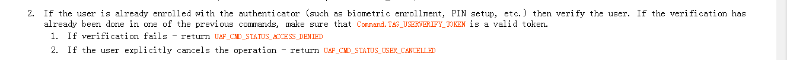
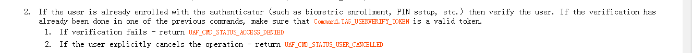

可以看到，这个字段是由 这个字段是由AppId,PersonID，ASMToken，CallerId四个字段组成的。那么KHAccessToken的又是组织这个几个字段呢？文档里面也指明了这个问题
可以看到，这个字段是由 这个字段是由AppId,PersonID，ASMToken，CallerId四个字段组成的。那么KHAccessToken的又是组织这个几个字段呢？文档里面也指明了这个问题
 可以看到，ASM拿到这个四个数据后：做了以下操作
可以看到，ASM拿到这个四个数据后：做了以下操作关于这个字段的组成:文档里面的注释有： 可以看到，这个字段是由 这个字段是由AppId,PersonID，ASMToken，CallerId四个字段组成的。那么KHAccessToken的又是组织这个几个字段呢？文档里面也指明了这个问题
可以看到，ASM拿到这个四个数据后：做了以下操作
以上就是KHAcessToken的组成。 KHAcessToken 有什么作用呢？
X509证书是一种PKI技术中的一种认证方式，在注册过程中，认证器会将X509证书的信息发送给fido Server，fido sever会做根据证书做证书的信息在证书链中查找根证书，最终判定证书是否是有效的
认证器有四个类型，从因子数目和是否绑定两种因素，分为以下四种类型：
在原来的文档中注册过程：ASM操作中有这样一点：
 我们可以看到，认证器应该是事先就对用户的身份进行了注册，当在之后fido流程中（比如注册，认证这些过程中），ASM会事先在这个过程中，要求认证器去验证用户的信息（这个时候，认证器就可以起到识别用户的作用了）
我们可以看到，认证器应该是事先就对用户的身份进行了注册，当在之后fido流程中（比如注册，认证这些过程中），ASM会事先在这个过程中，要求认证器去验证用户的信息（这个时候，认证器就可以起到识别用户的作用了）
我们首先了解，KeyHandle的组成是什么 可以看到，keyHandle是由KHAceessToken和认证器产生的私钥构成的。我们假设现在的认证器是一因子的绑定类型认证器：那么，在认证的过程中：ASM会根据KeyIds来寻找KeyHandle，并通过KHAceesToken进行过滤，最终得到KeyHandle中的私钥，然后去签名服务器的挑战。所以，我们可以看到，KeyHandle的有以下几个作用点：
可以看到，keyHandle是由KHAceessToken和认证器产生的私钥构成的。我们假设现在的认证器是一因子的绑定类型认证器：那么，在认证的过程中：ASM会根据KeyIds来寻找KeyHandle，并通过KHAceesToken进行过滤，最终得到KeyHandle中的私钥，然后去签名服务器的挑战。所以，我们可以看到，KeyHandle的有以下几个作用点：
我们首先来看文档中如何定义KeyId的？ 可以看到，KeyId是一个32位的随机数或者是KeyHandle的一串摘要数值。那么，KeyId是用来干什么的呢？首先，文档中，在注册过程ASM中，指出
可以看到，KeyId是一个32位的随机数或者是KeyHandle的一串摘要数值。那么，KeyId是用来干什么的呢？首先，文档中，在注册过程ASM中，指出 ,KeyId最终和KeyHanlde被存储在ASM的数据库中（一因子绑定类认证器）。之后，KeyId会发送给服务器存储。在随后的认证过程中：文档在ASM中的认证过程中，指出
,KeyId最终和KeyHanlde被存储在ASM的数据库中（一因子绑定类认证器）。之后，KeyId会发送给服务器存储。在随后的认证过程中：文档在ASM中的认证过程中，指出 可以看到，ASM会从（一因子绑定类的认证器）之前的数据库中，拿出KeyId对应的KeyHandle，交给认证器使用。因此，我们可以看到，KeyIds的最大作用就是进行KeyHanlde的查找。
可以看到，ASM会从（一因子绑定类的认证器）之前的数据库中，拿出KeyId对应的KeyHandle，交给认证器使用。因此，我们可以看到，KeyIds的最大作用就是进行KeyHanlde的查找。
为什么会出现一个KeyId对应多个keyHandle呢？因为我认为，协议中是允许一个用户用fido协议注册多个UserName的，其中包括UserName相同和不同的情况。而KeyID是一个32位的随机数字或者是KeyHanlde的摘要，那么，问题来了？（注：这里只是针对一因子的认证器）
1.若KeyId为KeyHandle的摘要，那么KeyHandle是否会重复？
2.若KeyId为一个32为的随机数，那么KeyHandle是否会重复？
我个人认为：第一种情况，一个KeyID只能找出一个KeyHanlde，而第二种情况，一个KeyID，可能会找出多个KeyHandle来。
那么，找出了多个KeyHandle后，ASM和认证器又做了什么处理呢？我们仔细看文档中的截图： 这里首先从认证器出发，认证器发现有大于一个KeyHnadle，则会把KeyHandle中的UsernName都返回给认证器，然后认证器这样做
这里首先从认证器出发，认证器发现有大于一个KeyHnadle，则会把KeyHandle中的UsernName都返回给认证器，然后认证器这样做 认证会先找出相同的userName，然后选取最近注册过的userName，然后让从不同的用户名字中，让用户选择一个用户名字来进行确认，用户选择了之后，再将最终的KeyHandle返回给认证器。
认证会先找出相同的userName，然后选取最近注册过的userName，然后让从不同的用户名字中，让用户选择一个用户名字来进行确认，用户选择了之后，再将最终的KeyHandle返回给认证器。
这个确实还没有搞清楚，之后看了文档仔细说
这个字段的最关键作用就是ASM让认证器去识别用户的身份的，也是Fido协议的实现用户身份可靠性的一个关键点。无论是在fido的注册还是认证过程中，用户都是事先在认证器中注册过自己的身份的。因此，每当遇见在注册，认证过程中，ASM都会事先要求认证器验证用户身份的正确性，这时候，如果认证器认证用户成功，UserVerificationToken这个字段就会生成，然后ASM会把这个字段再次发给认证器，认证器也会再次对UserVerificationToken字段做认证。文档中截图如下所示 [图为注册过程中，ASM的要求认证器认证器用户身份的操作][图为注册过程，认证器收到ASM的信息后检验UserVerificationToken的操作]
[图为注册过程中，ASM的要求认证器认证器用户身份的操作][图为注册过程，认证器收到ASM的信息后检验UserVerificationToken的操作]
用于服务器验证客户是否将挑战签名成功的一个关键因素。服务器收到客户端的assertion字段之后，会解析到FinalChanlleageParams 的摘要信息(这个信息是认证器已经做好了的)，然后将客户端发过来的FinalChanlleageParams再次计算摘要信息，比对两次计算的摘要信息是否一致，如果不一致，则用户签名挑战失败，如果一致，则表示用户认证成功
:根据文档中，ASM在认证的过程中，会出现这样一句话：!意思是说，如果用户在认证之前，没有注册过这个认证器的话，那么，认证的过程是失败的，所以，我的理解应该是，每一个用户在使用一个新的认证器之前，都要去注册（比如A用户使用认证器A做支付宝的指纹支付，B用户使用认证器B做支付宝的支付，某天B用户需要用A用户的认证器来做支付，那么，如果B用户没有注册，则首次的支付应该是失败的）(注：这种情况应该是一因子认证器的)
考虑上一个问题的情况，如果出现上一种情况，那么B用户在A 的认证器A上再次注册后，服务器上就会存在userName对应多个KeyId，因此，在B用户之后支付认证的过程中，服务器可能会发送多个keyIDs给客户端，让ASM去筛选那个KeyIDs才可能匹配。